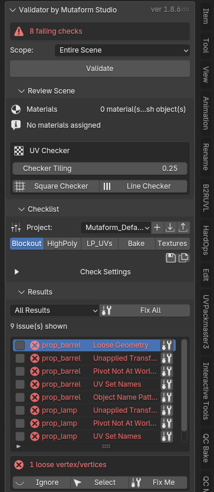
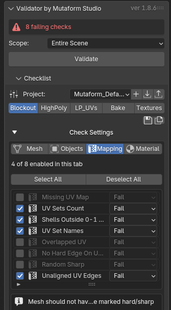
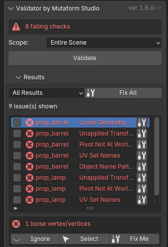
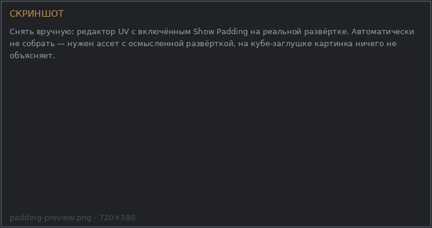

Scene QC Validator¶
Чек-лист проверок сцены перед отдачей. Аддон прогоняет модель через набор правил — топология, трансформации, развёртка, материалы, именование — и выдаёт список того, что нужно поправить. Часть проблем чинится одной кнопкой.
Главная идея: набор проверок не один на все случаи, а свой для каждой стадии работы. На блокауте бессмысленно требовать чистую развёртку, а перед текстурированием — обязательно.

Установка¶
Edit → Preferences → Get Extensions- Шестерёнка →
Repositories→+→Add Remote Repository -
Ссылка:
-
Найти
Scene QC Validatorи установить
Панель: N в 3D-вьюпорте → вкладка QC Validator. Нужен Blender 4.5 или новее.
Первый запуск¶
В новом файле чек-листа ещё нет — панель показывает только кнопку Initialize Checklist. Нажмите её один раз, и проверки появятся со значениями из проекта по умолчанию.
Дальше порядок такой:
- Выбрать Scope — что проверять.
- Применить стадию, соответствующую этапу работы.
- Нажать Validate.
- Разобрать список результатов.
Область действия¶
| Scope | Что проверяется |
|---|---|
| Selection | только выделенные меши |
| Visible Scene | все видимые меши активной сцены |
| Entire Scene | все меши, включая скрытые |
По умолчанию — Selection. На тяжёлой сцене это заметно быстрее, и обычно вы и так работаете с одним ассетом.
Стадии¶
Стадия — это сохранённый набор: какие проверки включены, с каким уровнем и
какими параметрами. Стадии собраны в проект. Из коробки идёт проект
Mutaform_Default с пятью стадиями. Это не лестница строгости: каждая стадия
спрашивает то, что уместно на своём этапе, и молчит про остальное.
| Стадия | Проверок | Чем занята |
|---|---|---|
| Blockout | 14 | мусор в геометрии, трансформации, имена объектов и UV-наборов, число материалов. Самой развёртки ещё не спрашивают |
| HighPoly | 9 | самая свободная. Со скульпта спрашивают имена, трансформации и дубликаты граней: незамкнутая сетка, вырожденные и вогнутые грани там в порядке вещей |
| LP_UVs | 25 | полный набор: топология, развёртка целиком, материалы, Nanite |
| Bake | 24 | то же самое, но без Nanite Closed Geometry |
| Textures | 25 | тот же набор, что и на LP_UVs |
Стадии — это ряд кнопок под строкой Project. Нажатие применяет стадию: проверки переключатся, параметры подставятся.
Стадия гасит лишнее
В каждой стадии встроенного проекта перечислены все 27 проверок, поэтому переключение не накапливает включённое с прошлого этапа: чего стадии не нужно, то она выключит. В своём проекте так не обязательно — проверка, которую стадия не упоминает, останется в том состоянии, в каком её застали.
Где сам чек-лист¶
Список проверок свёрнут по умолчанию
Под кнопками стадий есть строка Check Settings со стрелкой. Пока она свёрнута, самих проверок в панели не видно — только выбор проекта и стадии. Это первое, обо что спотыкаются: кажется, что чек-листа нет.
Разверните её — появятся вкладки Mesh / Objects / Mapping / Material, счётчик включённых проверок на текущей вкладке, кнопки Select All и Deselect All, сам список с галочками и уровнем каждой проверки, а под списком — описание выбранной и её параметры.

Свой набор
Настроили чек-лист под конкретную задачу — сохраните его как стадию (Save Stage) или как целый проект (Save Project). Пользовательские проекты лежат в папке расширения и не конфликтуют со встроенными: встроенный проект перезаписать нельзя.
Чтобы передать набор другому художнику — Export Project, получится JSON-файл. У него на машине — Import Project.
Чтение результатов¶
После Validate полоса состояния наверху показывает вердикт: либо «all checks passed», либо число блокирующих проблем.
Каждая проверка имеет уровень:
- Fail — блокирует, пока не исправлено;
- Info — сообщает, но вердикт не портит.
Уровень меняется для каждой проверки отдельно в чек-листе. Если проверка в вашем пайплайне желательна, но не обязательна, переведите её в Info вместо того чтобы выключать совсем — так о ней хотя бы будет видно.

Клик по строке результата выделяет объект и переходит в режим редактирования с выделенными проблемными вершинами, рёбрами или полигонами — если проверка запомнила, где именно проблема.
Заглушить проблему¶
Кнопка Ignore Issue на строке. Заглушённая проблема перестаёт влиять на
вердикт и переживает повторный Validate — список заглушек хранится в сцене
отдельно от результатов.
Заглушка привязана к паре «объект + проверка». Переименуете объект — заглушка отвяжется.
Автоисправление¶
Fix Me чинит одну строку, Fix All — все, у которых есть автофикс.
Часть фиксов меняет геометрию
В справочнике у каждой проверки указано, разрушающий у неё фикс или нет. Триангуляция n-гонов, удаление вырожденных граней, применение трансформаций — это изменение модели, а не пометка.
Fix All идёт по списку подряд и на тяжёлой сцене занимает время — поэтому и показывает прогресс. После Fix All запустите Validate заново: часть исправлений порождает новые замечания.
Проверки без автофикса — те, где правильное решение зависит от задачи. Например,
Pivot Not Centered: где должен быть пивот, зависит от того, как ассет ставится
в сцене, и аддон не берётся угадывать.
Осмотр развёртки¶
Отдельно от чек-листа есть интерактивные инструменты — они ничего не сообщают в результаты, а показывают состояние прямо в редакторе.
Show Overlaps подсвечивает налезающие друг на друга UV. Работает по выбранному номеру UV-набора.
Show Padding показывает, во что превратятся отступы между островами при заданном размере текстуры. Меняешь размер текстуры — величина отступа пересчитывается пропорционально, чтобы соотношение сохранилось.
Show Texel Density красит объекты по плотности текселей: сразу видно тех, кто выбивается из общего масштаба.

Один материал — один текстурный сет
Все три инструмента смотрят только на грани активного материала. Чужие острова не рисуются рядом, не считаются налезанием и не влияют на среднюю плотность, по которой Texel Density подбирает цвет.
На мультиматериальной модели иначе и нельзя: соседний материал уедет в свою текстуру, мерить его вместе с этим незачем. Переключили активный слот — осмотр перенаводится сам, выходить из него не нужно.
Осмотр, открытый кликом по строке результата, — исключение: он показывает меш целиком, ровно то, на что пожаловалась проверка.
Check All Material Users
У всех трёх инструментов есть эта галочка, и она важнее, чем кажется. Без неё смотрится только активный объект. С ней — все видимые меши с тем же материалом, то есть всё, что попадёт в один атлас.
Два объекта по отдельности могут быть чистыми и при этом налезать друг на друга в общей развёртке. Без этой галочки такое не находится.
Toggle UV Checker натягивает шахматную текстуру на все материалы. Исходные материалы не портятся — повторное нажатие возвращает всё как было. Плотность клетки меняется на лету.
Обход материалов¶
В свитке Review Scene перечислены материалы области действия: сколько объектов и слотов у каждого. У строки два действия.
Клик по имени материала выделяет все объекты сцены, где он есть, — не только попавшие в Scope. Заодно этот материал становится активным слотом на каждом из них, так что инструменты осмотра оказываются наведены куда надо.
Кнопка справа — Review Material UVs. Она заводит многообъектный режим редактирования, в котором выделены только грани этого материала: в редакторе UV видно его развёртку и ничего лишнего. Пока осмотр идёт, строка «Reviewing <имя>» стоит и в Review Scene, и в Checklist. Повторное нажатие возвращает выделение, режим и синхронизацию UV в исходное состояние.
Так ассет обходится атлас за атласом: нажал материал — посмотрел налезания, отступы и плотность — перешёл к следующему. Скрытые и невыделяемые объекты пропускаются, их число аддон пишет в статусной строке.
Что дальше¶
Полный список из 27 проверок с параметрами и признаком разрушающего фикса — в справочнике интерфейса.